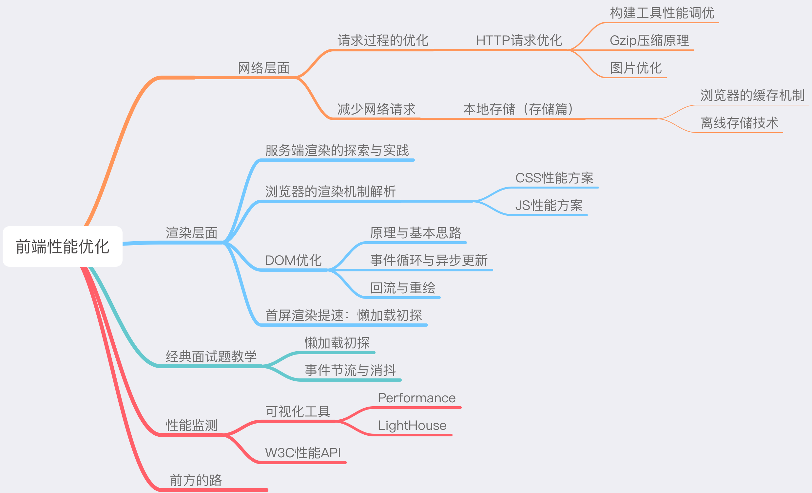
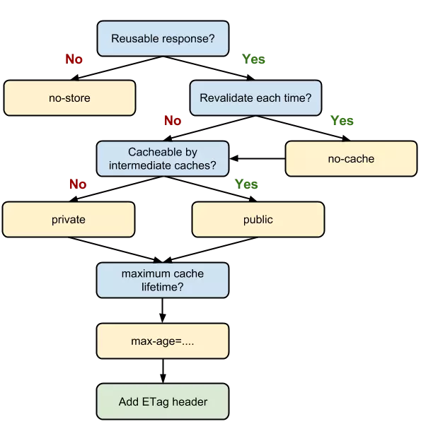

1.架构图

2.HTTP优化两大方向
- 减少请求次数
- 减少单次请求所花费的时间
3.webpack优化方案
- 1）不要让loader做太多事情：
- 利用include或exclude来避免不必要的转译
- 开启缓存将转译结果缓存至文件系统：loader: 'babel-loader?cacheDirectory=true'
- 2）不要放过第三方库
- 使用DllPlugin，把第三方库单独打包到一个文件中，这个依赖库不会跟着你的业务代码一起被重新打包，只有当依赖自身版本变化时才会重新打包
- Happypack
- 将loader由单进程转为多进程
- 3）构建结果体积压缩
- 4）拆分资源
- 删除冗余代码
- Tree-Shaking，基于import/export语法，可以在编译的过程中获悉哪些模块并没有真正被使用
- Tree-Shaking针对性强，适合用来处理模块级别的冗余代码
- 5）按需加载
- 一次不加载完所有的文件内容，只加载此刻需要用到的那部分
- 当需要更多内容时，再对用到的内容进行即时加载
- webpack中的require.ensure方法
4.Gzip背后的原理：是在一个文本文件中找出一些重复出现的字符串，临时替换它们，从而使整个文件变小。文件中代码的重复率越高，那么压缩的效率就越高，使用Gzip的收益也就越大。反之亦然
5.图片优化：
- 1）更应该说是做“权衡”，寻求质量与性能之间的平衡
- 2）JPG适用于呈现色彩丰富的图片，大图
- 3）PNG追求最佳显示效果，不在意文件大小时，小logo、颜色简单对比强烈的背景图等
- 4）SVG代码文件，矢量图，但消耗cpu计算资源
- 5）base64
- 图片实际尺寸很小
- 无法以雪碧图的形式与其他小图结合
- 图片的更新频率非常低
- 6）WebP，太新，兼容性问题，需要后端判断请求头中的Accept字段是否支持image/webp
6.http缓存
- 1）强缓存
- 利用http头中的Expires和Cache-Control来控制。当请求再次发出时，浏览器根据其中的expires和cache-control判断目标资源是否“命中”强缓存，命中则直接从缓存中获取资源，不会再与服务端发生通信，对应请求状态200
- 优先走cacche-control（新），通过max-age控制资源的有效期
- publicu资源，可以被浏览器缓存，也可以被代理服务器缓存，默认都是private，不需要手动调整
- no-cache，向服务器确认资源是否过期
- no-store，不使用缓存
- 2）协商缓存
- 浏览器向服务器询问缓存的相关信息，进而判断是重新发起请求下载完整的响应还是从本地获取缓存的资源，对应请求状态304
- 使用Last-Modified（旧）和Etag（新）
- Etag是由服务器为每个资源生成的唯一标识字符串，基于文件内容编码的，只要文件内容不同，就会不同，能够精准感知文件变化，需要服务器的额外开销。作为Last-Modified的补充和强化存在，不能完全代替
- 3）Chrome出的HTTP决策图

7.另外三种缓存
- 1）MemoryCache
- 在内存中的缓存，最先尝试去命中的，响应速度最快
- tab关闭后就不存在
- 浏览器按“节约原则”存储进memory，如Base64图片、体积小的js、css文件
- 2）Service Worker Cache
- 独立于主线程之外的JS中，脱离于浏览器窗体，无法直接访问DOM，可以实现离线缓存、消息推送和网络代理等
- 生命周期包括install、active、working，一旦install后将始终存在，在active和working之间切换，除非主动终止它
- 必须以https协议为前提
- 3）Push Cache
- HTTP2在server push阶段存在的缓存（很新）
- 缓存的最后一道防线
- 存在于会话阶段的缓存，当session终止时，也随之释放
- 不同页面只要共享了同一个HTTP2连接，那么它们就可以共享同一个Push Cache
8.本地存储
- 1）cookie
- 最早是为了解决HTTP无状态的问题
- 太小，紧跟域名
- 2）Web Storage
- LocalStorage是持久化的本地存储，SessionStroage是临时性的会话级别存储
- 都遵循同源策略，但SessionStorage即使在同域名下，如果不是同一个浏览器窗口打开也不行
- LocalStroage适合持久稳定的资源
- Session适合同步会话级别的信息，只适用于当前会话，如微博使用这来存储历史信息（上一次页面的URL）
- 3）IndexDB
- 运行在浏览器上的非关系型数据库
- 复杂结构型数据
*PWA文档
9.CDN不同域名存放静态资源的功效：同一个域名下的请求会携带Cookie，而静态资源往往并不需要Cookie，把静态资源和主页面置于不同的域名下，完美地避免了不必要的Cookie的出现
10.客户端渲染：服务端把渲染需要的静态文件发送给客户端，客户端加载过来之后，自己在浏览器里跑一遍JS，根据JS的运行结果，生成相应的DOM（页面上呈现的内容，你在html源文件里找不到）
11.服务端渲染：当用户第一次请求页面时，由服务器把需要的组件或页面渲染成HTML字符串，然后把它返回给客户端（页面上呈现的内容，在html源文件里也能找到）
12.浏览器内核
- HTML解释器：将HTML文档经过词法分析输出DOM树
- CSS解释器：解析CSS文档，生成样式规则
- 图层布局计算模块：布局计算每个对象的精确位置和大小
- 视图绘制模块：进行具体节点的图像绘制，将像素渲染到屏幕上
- JS引擎：编译执行JS代码
13.浏览器渲染过程解析


- DOM树解析HTML内容
- CSSOM树，与DOM并行创建CSS树
- 渲染树：CSSOM与DOM结合
- 布局渲染树：从根节点递归调用，计算每个元素大小、位置等，给每个节点所应该出现在屏幕上的精确坐标
- 绘制渲染树：每个节点使用UI后端层来绘制
14.CSS优化
- 1）CSS引擎查找样式表，对每条规则都按从右到左的顺序去匹配
- 不要用#id li，这样先去查找所有li是否有个叫id的父层
- *{}会去遍历每一个元素
- 2）建议
- 避免使用通配符，只对需要用到的元素进行选择
- 关注可以通过继承实现的属性，避免重复匹配重复定义
- 少用标签选择器，如果可以，用类选择器替代
- id和class选择器不应该被多余的标签选择器拖后腿
- 减少嵌套。后代选择器的开销是最高的（不要超过三层）尽可能使用类来关联
15.CSS阻塞渲染：浏览器在构建CSSOM的过程中，不会渲染任何已处理的内容，要将CSS尽早、尽快地下载到客户端
16.JS阻塞渲染
- JS代码在文档何处插入，就在何处执行。HTML解析器遇到script标签会暂停渲染过程，将控制权交给JS引擎。因为HTML不知道JS会改变什么东西
- 默认加载JS会进行阻塞
- 使用async，JS不会阻塞，异步加载，加载完成后JS立即执行
- 使用defer，JS加载是异步的，执行被推迟，等整个文档加载完成才会执行
17.对DOM的修改引发样式的更迭
- 当我们对DOM的修改会引发它外观（样式）上的改变时，就会触发回流或重绘
- 回流：对DOM的修改引发了DOM几何尺寸的变化（宽高、隐藏等）时，浏览器需要重新计划元素的几何属性（其他元素也可能受到影响），然后再将计算的结果绘制出来，也叫重排
- 重绘：引发了样式变化，却并未影响其几何属性，浏览器不需要重新计算元素的几何属性，直接为该元素绘制新的样式
- 重绘不一定导致回流，回流一定会导致重绘
18.减少DMO操作
- 让JS去给DOM分压
- 使用DOM Fragment对象：createDocumentFragment
19.Micro-Task与Macro-Task
- 常见的macro-task：setTimeout、ssetInterval、setImmediate、script（整体代码）、I/O操作、UI渲染等
- 常见的micro-task：process.nextTick、Promise、MutationObserver等
20.Event Loop事件循环执行过程

- 当我们需要在异步任务中实现DOM修改时，把它包装成micro任务是相对明智的选择
21.回流的导火索：
- 最“贵”的操作：改变DOM元素的几何属性（宽高左右间距边框等）
- “价格适中”的操作：改变DOM树的结构（节点增减、移动等）
- 最容易被忽略的操作：获取一些特定属性的值（offsetTop、scrollTop、clientTop等），通过即时计算得到
22.如何规避回流与重绘
- 将“导火索”缓存起来，避免频繁改动
- 避免逐条改变样式，使用类名去合并样式
- 将DOM“离线”（给个display:none; 然后再操作）
23.throttle（节流）：在某段时间内，不管你触发了多少次回调，只认第一次，并在计时结束时给予响应
24.Debounce（防抖）：在某段时间内，不管触发了多少次回调，都只认最后一次